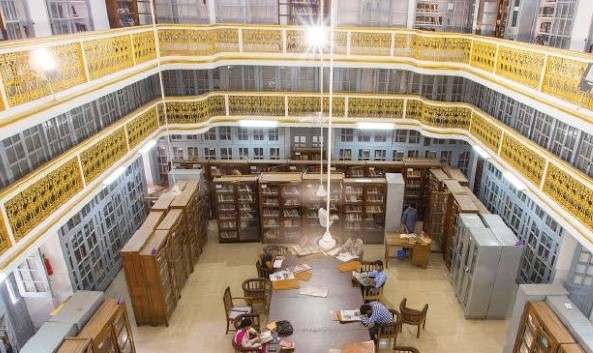
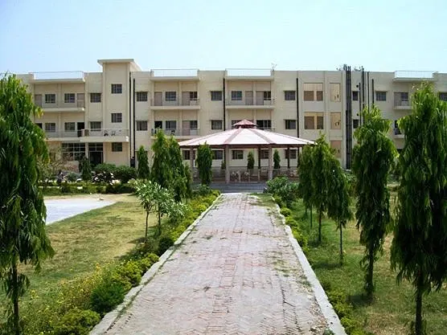
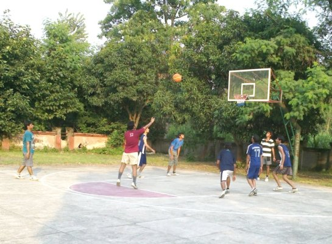

Course We Offer
The Gurukula Kangri university provides many UG and PG degrees in B.Tech, B.A., B.Pharm., BBA, M.A, MBA and PhD courses. The following is the list of all the courses available in the Gurukula Kangri Vishwavidyalaya:
Under Graduation
In this university all types og ug degree are available for example computer science,bechlor of science,,bsc,b.tech ,BCA ,BBA,and many types or profesnols degree we are provided our best
Post Graduation
A master's degree is a graduate degree that allows students to build advanced knowledge of a specialized body of theoretical and applied knowledge, forge a deeper understanding of their area of study, and develop a range of skills applicable to their trade.
PHD Programs
What is a PhD program?
A PhD (Doctor of Philosophy) is a doctoral research degree and the highest level of academic qualification you can achieve. A PhD degree normally takes between three and four years of full-time work to complete. You'll research and write a thesis offering an original contribution to your subject.
Our Global Campus
Wi-Fi campus.
Sports and Gym are available at campus.
The student accommodation at Gurukula Kangri University is a "home away from home". Hostels in the main campus, with all facilities for study and recreation.
Several clubs are active on the Gurukula Kangri university campus, initiated by enthusiastic students. The Robotics Club, Technodium Club is a good example, motivating students, distributing low cost kits, conducting workshops and organizing competitions.
Our Facilities
Gurukul Kangri Universwity Haridwar Facilities Details: Hostel, Campus, Infrastructure, Library, Canteen

World Class Library
Gurukula Kangri Vishwavidyalaya is equipped with several departmental libraries as well as digital libraries which provide academic content to the students.ibrary is a collection of books, and possibly other materials and media, that is accessible for use by its members and members of allied institutions

Hostel
* Boys Hostel
The college has a boys hostel facility which provides good hostel accommodation for the students.
* Girls Hostel
The college has a girl's hostel facility which provides good hostel accommodation for the students.

Other Facilities
*Gym
The college has Gym facility for the students.
* IT Infrastructure
The college has an excellent IT Infrastructure facility for the students.
* Auditoriom
The college has an auditorium facility for events and seminars.
.
What Our Student Says
The faculty are very supportive and they are very cooperative, Location of college i.e haridwar many places to visit nereby, You can this college at low rank also so if you properly study 4 years you can get a good placement.

Campus Life
Infrastructure is muchh good. Sports stadiums are well maintained (basketball court, tennis court, badminton court,squash court, football and cricket stadium), a huge library with lakhs of books, labs are well equipped.
Elon Musk
Campus Life
Infrastructure is muchh good. Sports stadiums are well maintained (basketball court, tennis court, badminton court,squash court, football and cricket stadium), a huge library with lakhs of books, labs are well equipped.
Mukesh Ambani
Enrol for our courses Anywehere from the world
And enjoy the study in ecilent enviorment
CONTACT US